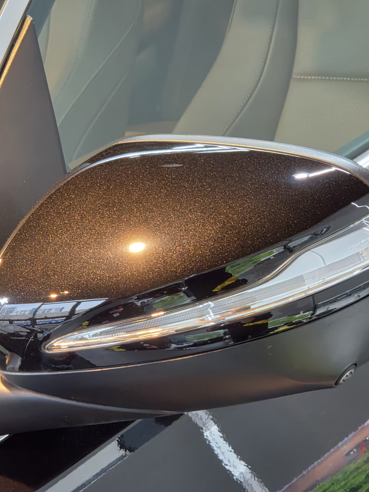
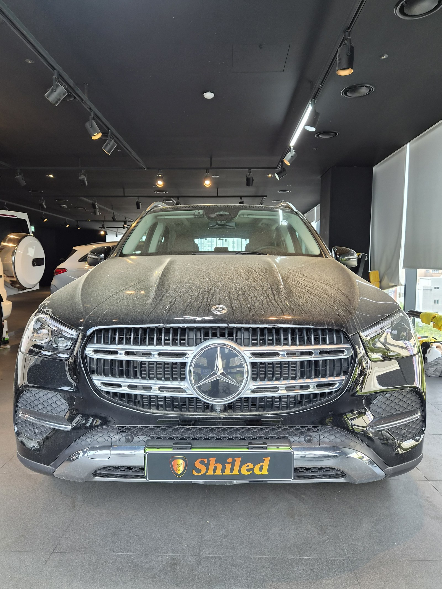
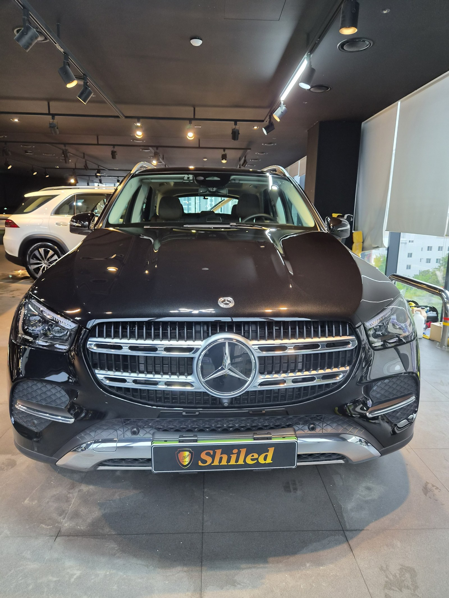
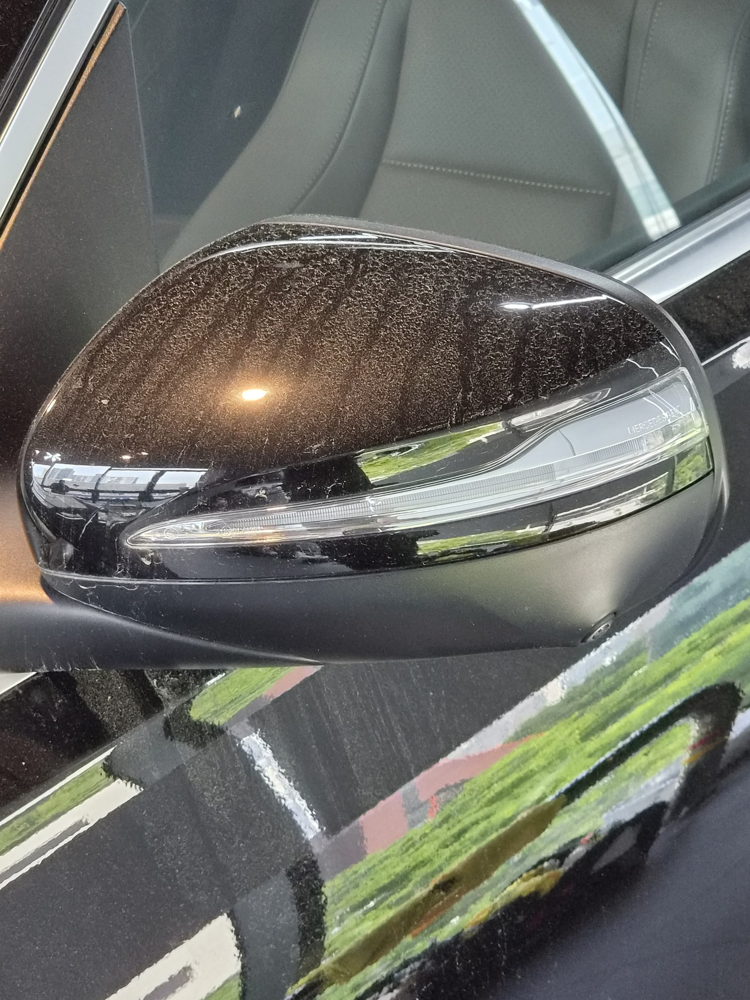
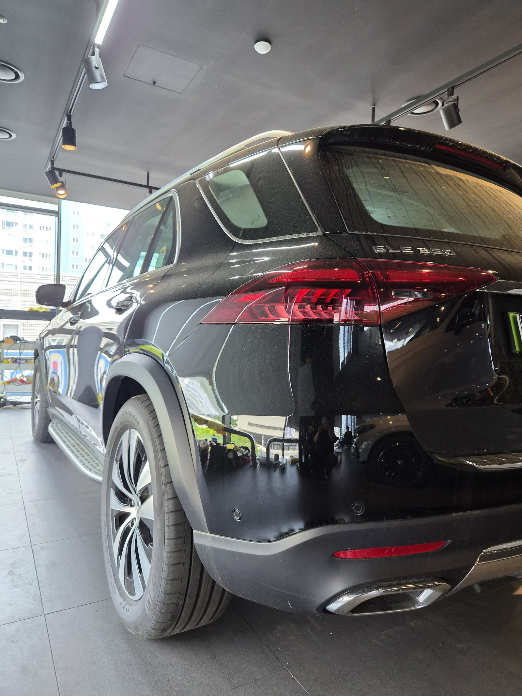
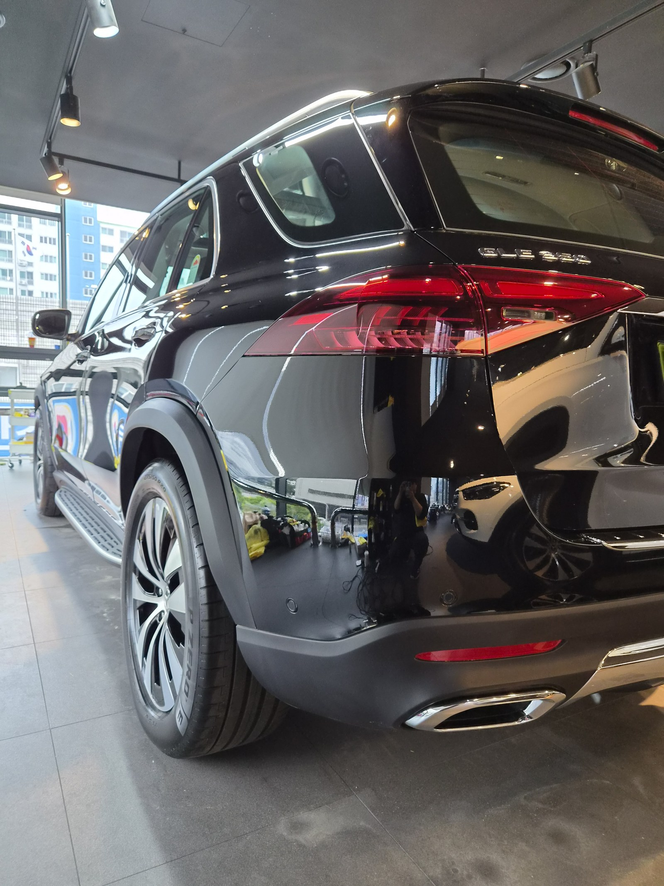
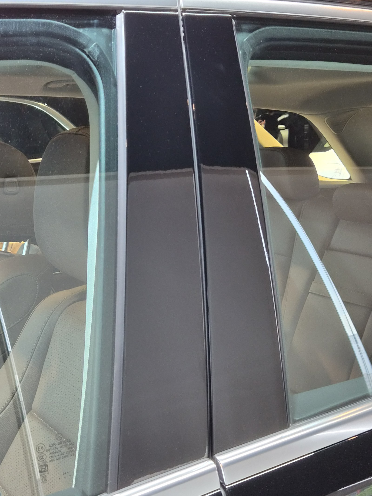
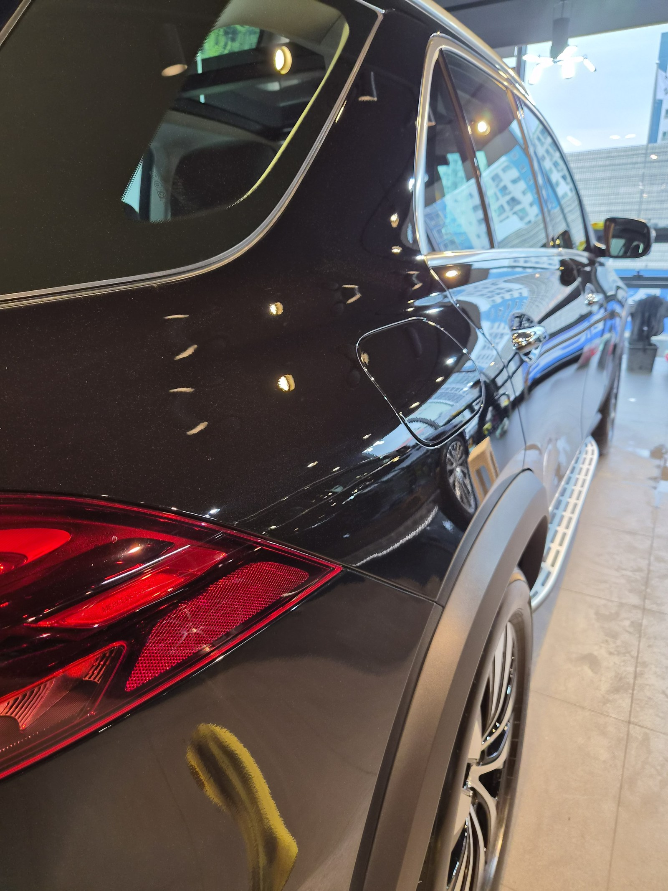

부산 쉴드광택에 들어온 벤츠 GLE350입니다. 검정처럼 보이는 다크 브라운 메탈릭입니다.
이 차는 보닛에 깔린 버핑마크와 미러캡 잔기스를 광택으로 정리해 브라운 발색을 살렸습니다.

입고 때 보닛에 무지개 무늬가 떠 있었습니다
입고 직후 조명을 비추니 보닛 위로 물결 같은 무늬가 떠올랐습니다. 버핑마크(홀로그램)입니다.
이전에 누군가 광택을 하면서 마무리를 덜 잡고 남긴 자국입니다. 검정처럼 보이는 짙은 색이라 이런 자국이 더 도드라집니다.
다크 브라운은 왜 검정처럼 보이나
디자이노 계열의 짙은 브라운 메탈릭은 평소엔 검정에 가깝게 보입니다.
표면에 잔기스가 깔리면 빛이 산란해서 더 어둡게만 보입니다. 표면을 평탄하게 정리해야 빛이 도장 속 메탈릭 입자까지 들어갔다 나오면서 브라운 특유의 깊이가 살아납니다.
기술자의 팁
버핑마크는 패드와 폴리시 선택, 그리고 마무리 단계에서 갈립니다. 거친 단계에서 끝내면 자국이 남습니다. 더 고운 패드로 한 번 더 잡아줘야 비로소 무늬가 사라집니다.
광택은 무조건 세게 깎는 게 정답이 아닙니다
잔기스를 없앤다고 클리어코트(도장면 맨 위 보호막)를 마구 깎으면, 정작 도장 수명을 깎는 일이 됩니다.
그래서 잔기스 깊이를 보고 필요한 만큼만 컴파운드와 패드를 맞춰 깎습니다. 16년간 직접 시공하며 잡아온 감각입니다.

미러캡 — 광택 후 브라운 메탈릭 입자가 또렷하게 살아났습니다
같은 자리를 전후로 비교하면
말로 "잔기스를 걷어냈습니다"라고 하는 것보다, 같은 자리를 전후로 비교하는 게 정확합니다.
아래 사진은 작업 전과 작업 후에 같은 위치를 같은 조명 아래에서 찍은 것입니다.


보닛 — 물결처럼 떠 있던 버핑마크가 정리됐습니다


미러캡 — 뿌옇게 깔려 있던 잔기스가 사라지고 메탈릭이 살아났습니다


뒷펜더 — 반사가 또렷해지고 색이 깊어졌습니다
전처리가 먼저입니다
광택 전에 표면 오염부터 걷어내야 합니다.
디테일링 세차로 묵은 오염을 닦고, 철분 제거제로 박힌 쇳가루를 녹여냅니다. 이 과정을 건너뛰면 오염을 패드로 끌고 다니며 오히려 잔기스를 더 냅니다. 눈에 안 보이는 오염까지 잡는 게 퀄리티의 시작입니다.
마감 후
피아노블랙 B필러와 뒷도어 패널에 조명이 왜곡 없이 떨어집니다.
잔기스가 정리된 평탄한 표면이라야 이렇게 반사가 또렷합니다. 검정처럼 보이던 색이, 빛을 받으면 짙은 브라운으로 살아납니다.


광택 후, 이렇게 관리하세요
광택으로 정리한 표면은 그대로 두면 잔기스가 다시 쌓입니다.
자동세차(기계세차)는 브러시가 잔기스를 만드니 피하시는 게 좋습니다. 상태를 오래 유지하려면 광택 위에 유리막코팅을 올려 보호막을 만드는 쪽을 권합니다. 차량 상태와 예산에 맞춰 상담해 정합니다.
자주 묻는 질문
Q. 버핑마크(홀로그램)는 왜 생기나요?
A. 광택 작업 자체에서 남는 미세한 자국입니다. 컴파운드 입자나 패드가 남긴 흔적으로, 빛을 비추면 보닛 위에 물결무늬처럼 떠오릅니다. 마무리 단계에서 더 고운 패드로 한 번 더 잡아야 깔끔하게 사라집니다.
Q. 다크 브라운 메탈릭은 왜 검정처럼 보이나요?
A. 짙은 브라운 메탈릭은 평소엔 검정에 가깝게 보입니다. 잔기스가 깔려 빛이 산란하면 더 어둡게만 보입니다. 광택으로 표면을 정리하면 메탈릭 입자까지 빛이 들어갔다 나오며 브라운 발색이 살아납니다.
Q. 광택을 하면 도장이 얇아지지 않나요?
A. 필요한 만큼만 깎습니다. 클리어코트 두께를 보고 잔기스 깊이에 맞춰 컴파운드와 패드를 조절합니다. 무조건 세게 깎는 게 정답은 아닙니다.
Q. 광택 후 코팅은 꼭 해야 하나요?
A. 광택으로 정리한 표면은 보호막을 올려야 상태가 오래 갑니다. 유리막코팅을 올리면 잔기스가 다시 쌓이는 속도를 늦추고 발수·방오로 관리가 쉬워집니다. 상태와 예산에 맞춰 상담해 정합니다.
Q. 쉴드광택 위치와 예약은 어떻게 하나요?
A. 부산 남구 유엔로220 1F 쉴드광택입니다. 예약·상담은 010-3384-1850, 대표 최한중이 직접 상담하고 책임 시공합니다.
신차든 출고한 지 된 차든, 시작점이 다르면 결과도 다릅니다.
제품을 직접 만드는 사람이 직접 시공합니다.
부산에서 광택·유리막코팅을 고민 중이시면 편하게 연락 주십시오.
어떤 차를 타냐보다 어떻게 타냐가 중요합니다~!
📞 010-3384-1850 견적 문의쉴드광택 · 부산 남구 유엔로220 1F · 대표 최한중